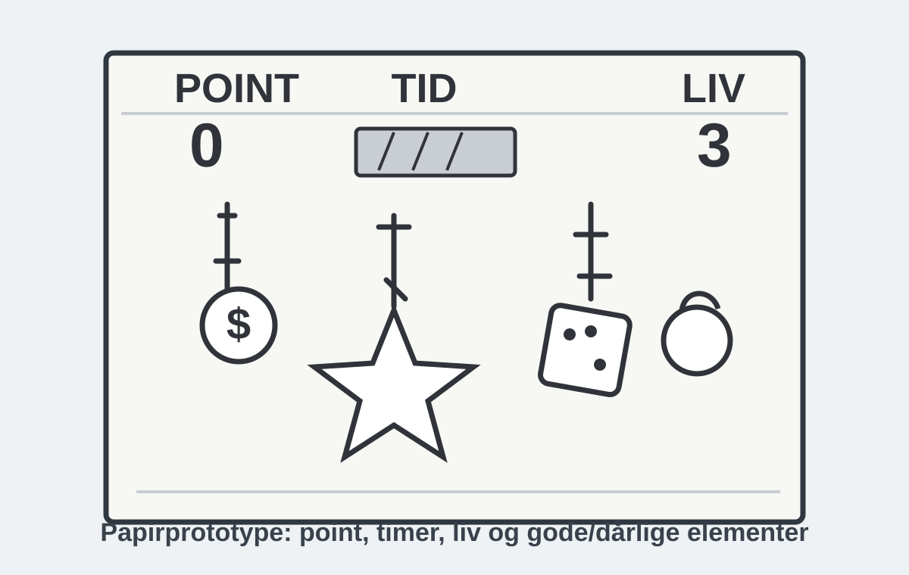
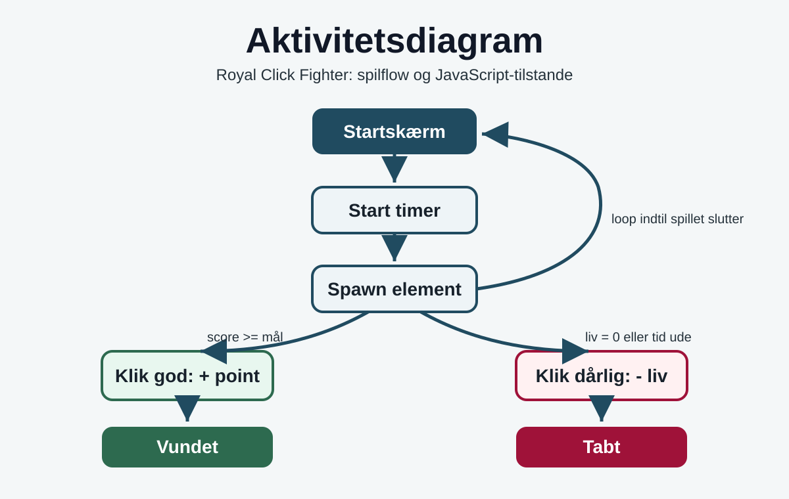

Tema 4 - Royal Click Fighter
Animation, JavaScript, spilflow, interaktion og feedback.
Dokumentation
Royal Click Fighter er mit Tema 4-projekt. Opgaven handlede om at udvikle et interaktivt browser-spil med animationer, point, liv, timer og tydelig feedback til brugeren.
Tidligere pegede Tema 4 på eksterne projektlinks, som ikke altid loader. Derfor er dokumentationen nu gjort intern i portfolioen med egne assets, wireframe, flowdiagram og en klikbar demo.
Spil intern demo Grafik og proces Teknik Test og refleksion Tilbage til Tema 4

Assetet ligger i repoet, så billedet virker direkte på GitHub Pages.
Opgave
Jeg skulle udvikle et klikbaseret spil, hvor brugeren hurtigt kan forstå reglerne og få feedback gennem animation, point, liv og spiltilstande.
Færdig løsning
Løsningen blev Royal Click Fighter: et browser-spil med gode elementer, dårlige elementer, score, liv, timer og win/lose-flow. Jeg har også lavet en intern demo, så projektlinket fungerer uden eksterne afhængigheder.
Grafik og proces
Min proces startede med spilidé og papirprototype. Jeg planlagde UI-elementer som point, timer og liv, og jeg tegnede de objekter brugeren skulle klikke på eller undgå.

Den viser layoutet før kodning: point til venstre, timer i midten, liv til højre og spilobjekter i banen.
Designvalg
- Stil: cyberpunk/casino med mørk baggrund, neonfarver og høj kontrast.
- Gode elementer: mønt, terning og stjerne, som giver point.
- Dårlige elementer: bombe/fare-elementer, som fjerner liv.
- Feedback: brugeren skal hurtigt kunne se point, liv og om spillet er vundet eller tabt.
Hvad jeg ville forbedre visuelt
Jeg ville gøre de færdige spilelementer mere konsekvente i stil, lave tydeligere hover/click-feedback og sikre, at alle assets ligger samme sted i projektmappen. I den oprindelige mappe var flere SVG-filer tomme, så det er vigtigt at kontrollere assets før publicering.
Teknik
Teknisk handlede projektet om at få HTML, CSS og JavaScript til at arbejde sammen som et spil. HTML gav strukturen, CSS gav layout og animationer, og JavaScript styrede spillets tilstande.

Diagrammet viser startskærm, timer, spawn af elementer, klik på gode/dårlige elementer og sluttilstande.
HTML-struktur
Spillet blev bygget omkring en game-container med lag til baggrund, spilelementer og UI. Det gør det lettere at styre, hvad der er baggrund, hvad brugeren klikker på, og hvad der viser information.
CSS-animation
Animationerne bruges til at få objekter til at bevæge sig i spilområdet. Det giver spillet tempo og gør, at brugeren skal reagere hurtigt.
JavaScript
- State: score, liv, tid og om spillet er aktivt.
- Events: klik på gode og dårlige elementer.
- DOM: opdatering af point, liv og beskeder på skærmen.
- Timer: spillet slutter, hvis tiden løber ud.
- Reset: brugeren kan starte en ny runde.
Hvad jeg lærte teknisk
Jeg lærte, at interaktive projekter hurtigt bliver uoverskuelige, hvis man ikke holder styr på variabler, funktioner og flow. Derfor er et aktivitetsdiagram og tydelig navngivning en stor hjælp, før man skriver JavaScript.
Test og refleksion
Test
Jeg testede om brugeren kunne forstå målet: klik på de gode elementer, undgå de dårlige, hold øje med liv og nå pointmålet før tiden løber ud. De vigtigste ting at kontrollere var, om knapperne virkede, om point/liv opdaterede korrekt, og om slutskærmen blev vist.
Refleksion
Projektet viste mig, at et spil ikke kun handler om grafik. Det handler også om tydelige regler, god feedback og en kode-struktur, der er nem at fejlfinde i.
Hvis jeg skulle arbejde videre, ville jeg opdele JavaScript-koden i mindre funktioner, tilføje sværhedsgrad, arbejde med lyd på en kontrolleret måde og teste med flere brugere tidligere i processen.